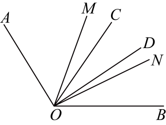
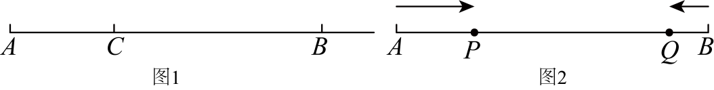
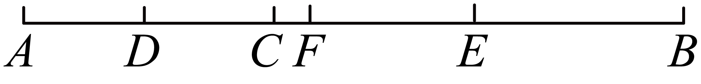
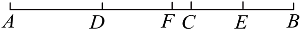
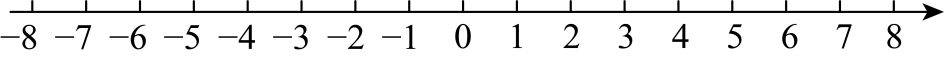
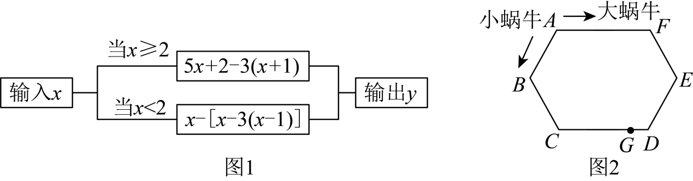

七年级数学上学期第二次月考·拔尖卷
【北师大版2024】
参考答案与试题解析
一、选择题（本大题共10小题，每小题4分，满分40分）
1．（25-26七年级上·辽宁大连·期中）若x=3，y=1，且x+y=x+y，则2x−y=（ ）
A．5或−7 B．−5或−7
C．5或7 D．−5或7
【答案】C
【分析】本题考查了绝对值的意义，有理数的加法，求代数式的值，由绝对值的意义可得x=3或x=−3，y=1或y=−1，x+y≥0，再分情况讨论即可得解，熟练掌握绝对值的意义是解此题的关键．
【详解】解：∵x=3，y=1，
∴x=3或x=−3，y=1或y=−1，
∵x+y=x+y，
∴x+y≥0，
当x=3，y=1时，x+y=4>0，满足题意，此时2x−y=2×3−1=5；
当x=3，y=−1时，x+y=2>0，满足题意，此时2x−y=2×3−−1=7；
当x=−3，y=1时，x+y=−2<0，不满足题意；
当x=−3，y=−1时，x+y=−4<0，不满足题意；
综上所述，2x−y=5或7，
故选：C．
2．（25-26七年级上·安徽合肥·期中）有一个两位数，十位上的数字是 a， 个位上的数字是 b， 将十位上的数字和个位上的数字颠倒，得到一个新的两位数，那么新数与原数的差用代数式表示为（ ）
A．0 B．11b−9a C．9a−9b D．9b−9a
【答案】D
【分析】本题考查了列代数式，整式的加减．
原两位数由十位数字a和个位数字b组成，表示为10a+b；新两位数由十位数字b和个位数字a组成，表示为10b+a．计算新数减去原数并化简即可．
【详解】解：由题意可知：原数=10a+b，新数=10b+a，
差=新数−原数=10b+a−10a+b
=10b+a−10a−b
=9b−9a．
故选：D．
3．（25-26七年级上·河北石家庄·期中）有两根木条，一根AB长为80cm，另一根CD长为130cm，在它们的中点处各有一个小圆孔M、N（圆孔直径忽略不计，M、N抽象成两个点），将它们的一端重合，放置在同一条直线上，此时两根木条的小圆孔之间的距离MN是（ ）

A．105cm B．20cm C．105cm或25cm D．105cm或20cm
【答案】C
【分析】本题主要考查线段两点间的距离，理解题意、分类作出相应图形是解题的关键．
分两种情况讨论：①当A、C或B、D重合且剩余两端点在重合点同侧时；②当B、C或A、D重合，且剩余两端点在重合点两侧时；让分别作出相应图形，并结合图形求解即可．
【详解】解：根据题意，分两种情况讨论：
①当A、C或B、D重合，且剩余两端点在重合点同侧时，
由图可得：MN=CN−AM=12CD−12AB=12×130−12×80=25cm；
②当B、C或A、D重合，且剩余两端点在重合点两侧时，
由图可得：MN=CN+BM=12CD+12AB=12×130+12×80=105cm；
∴两根木条的小圆孔之间的距离MN是105cm或25cm．
故选：C．
4．如图，在∠AOB内部有三条射线OC、OD、OE依次分布，若∠DOE=16°，∠AOE=13∠AOC，∠AOD=13∠AOB，则∠BOC=（ ）

A．24° B．32° C．42° D．48°
【答案】D
【分析】本题考查了角的和差倍关系，设∠AOE=x，可得∠AOC=3∠AOE=3x，∠AOD=∠AOE+∠DOE=x+16°，进而得到∠AOB=3∠AOD=3x+48°，再根据角的和差关系即可求解，正确识图是解题的关键．
【详解】解：设∠AOE=x，
∵∠AOE=13∠AOC，
∴∠AOC=3∠AOE=3x，
∵∠DOE=16°，
∴∠AOD=∠AOE+∠DOE=x+16°，
∵∠AOD=13∠AOB，
∴∠AOB=3∠AOD=3x+16°=3x+48°，
∴∠BOC=∠AOB−∠AOC=3x+48°−3x=48°，
故选：D．
5．（24-25七年级下·重庆万州·月考）若不论k取什么数，关于x的方程2kx+m3−x−nk6=1（m、n是常数）的解总是x=1．则m+n的值是（ ）
A．−0.5 B．−1.5 C．0.5 D．15
【答案】A
【分析】先把x=1代入方程2kx+m3−x−nk6=1，整理成关于k的一元一次方程，根据方程的解与k无关，得到关于k的方程有无数解，根据一元一次方程有无数解的条件，列式解答即可．
本题考查了一元一次方程的解，熟练掌握方程有无数解的基本条件是解题的关键．
【详解】解：∵2kx+m3−x−nk6=1，
∴4kx+2m−x+nk=6，
∴4x+nk=6+x−2m，
∵不论k取什么数，关于x的方程2kx+m3−x−nk6=1（m、n是常数）的解总是x=1，
∴4+nk=7−2m，
∴4+n=0,7−2m=0，
∴n=−4,m=3.5，
∴m+n=−4+3.5=−0.5，
故选：A．
6．（25-26七年级上·江苏·阶段练习）“幻方”最早记载于公元前500年的《大戴礼记》中，如图1所示，每个三角形的三个顶点上的数字之和都与中间正方形四个顶点上的数字之和相等，现将−1，2，−2，−4，5，−5，6，8填入如图2所示的“幻方”中，部分数据已填入，则图中a+b+c−d的值为（ ）

A．15或−5 B．5 C．−15 D．−5
【答案】B
【分析】本题要先读懂题意，直接根据数字之和相等可以得出等式，本题综合性比较强，比较注重逻辑推理．由题意可知，先将8个数的和相加等于9，每个三角形的三个顶点上的数字之和都与中间正方形四个顶点上的数字之和相等．则9÷3=3，每个三角形和正方形的和都为3，列式变形后可得结论．
【详解】解：由题意可得：−1+2−2−4+5−5+6+8=9，
∴9÷3=3，
∴b+c−1=3①，
2+c+d=3②，
a+c+2−1=3③，
①+③−②得：a+b+c−d=6+8−4−5=5．
故选：B．
7．已知关于x的一元一次方程x2023+a=2023x的解是x=2022，关于y的一元一次方程b2023+2023c=−a的解是y=−2021（其中b和c是含有y的代数式），则下列结论符合条件的是（ ）
A．b=−y−1,c=y+1 B．b=1−y,c=y−1
C．b=y+1,c=−y−1 D．b=y−1,c=1−y
【答案】B
【分析】根据x=2022，y=−2021得到x=1−y，得到1−y2023+2023y−1=−a的解为y=−2021，类比b2023+2023c=−a得到答案．
【详解】∵x=2022，y=−2021得到x=1−y，
∴1−y2023+2023y−1=−a的解为y=−2021，
∵方程b2023+2023c=−a的解是y=−2021，
∴b=1−y,c=y−1，
故选B．
【点睛】本题考查了一元一次方程的解即使得方程左右两边相等的未知数的值，正确理解定义是解题的关键．
8．（24-25七年级上·四川成都·期末）如图，∠AOB=120°，在∠AOB内作两条射线OC和OD，且OM平分∠AOD，ON平分∠BOC，若∠AOC:∠COD:∠DOB=5:3:4，则∠MON的度数为（ ）

A．45° B．50° C．55° D．60°
【答案】A
【分析】本题考查了角的计算，角平分线定义，掌握角的计算，角平分线定义是解题的关键．
根据题意，可设∠AOC=5x，∠COD=3x，∠DOB=4x，由∠AOB=120°，即可得出5x+3x+4x=120°，求出x的值，即可得出∠AOC，∠COD，∠DOB的度数，进而得出∠AOD，∠BOC的度数，再根据OM平分∠AOD，ON平分∠BOC，由角平分线定义可得出：∠AOM=12∠AOD，∠BON=12∠BOC，最后由∠MON=∠AOB−∠AOM−∠BON进行计算即可得出答案．
【详解】解：∵∠AOC:∠COD:∠DOB=5:3:4，
∴可设∠AOC=5x，∠COD=3x，∠DOB=4x，
∵∠AOB=120°，
∴∠AOC+∠COD+∠DOB=120°，
即5x+3x+4x=120°，
解得：x=10°，
∴∠AOC=5×10°=50°，∠COD=3×10°=30°，∠DOB=4×10°=40°，
∴∠AOD=∠AOC+∠COD=80°，∠BOC=∠COD+DOB=70°，
又∵OM平分∠AOD，ON平分∠BOC，
∴∠AOM=12∠AOD=12×80°=40°，∠BON=12∠BOC=12×70°=35°，
∴∠MON=∠AOB−∠AOM−∠BON=120°−40°−35°=45°．
故选：A．
9．（24-25七年级上·河北邯郸·期中）定义：如图1，点C在射线AB上，图中共有三条线段AB，AC和BC，若其中有一条线段的长度是另外一条线段长度的2倍，则称点C是线段AB的“美点”．如图2，已知AB=24cm，动点P，Q分别从点A，B同时出发沿AB相向运动，速度分别为2 cms，1 cms，当点P到达点B时，运动停止．设点P的运动时间为ts，当点P恰好是线段AQ的“美点”时，t最大值与最小值的差为（ ）

A．185 B．65 C．247 D．607
【答案】D
【分析】本题考查了几何新定义，一元一次方程的应用，线段的和差计算，根据题意，分别表示出AP,AQ,PQ，根据新定义可得PQ=2AP或AQ=2AP或AP=2PQ，进而列出一元一次方程，解方程，即可求解．
【详解】解：动点P，Q分别从点A，B同时出发沿AB相向运动，速度分别为2 cms，1 cms，设点P的运动时间为ts，
∴AP=2t，AQ=AB−BQ=24−t，
当AP+BQ=24时，P,Q相遇，即2t=24−t，
解得：t=8
当t<8时，PQ=AB−AP−BQ=24−2t−t=24−3t，
当8<t≤12时，PQ=AP+BQ−AB=3t−24，
∴PQ=24−3t，
由新定义可知PQ=2AP或AQ=2AP或AP=2PQ，
当PQ=2AP时，则24−3t=2×2t，
解得t=247或t=−24（舍去）
当AQ=2AP时，则24−t=2×2t，
解得t=245；
当AP=2PQ时，则2t=2×24−3t，
解得t=6或t=12，
∴t的最大值为12，最小值为247，
∴12−247=607，
故选：D．
10．（25-26七年级上·浙江绍兴·期中）将3，4，5，6，7，8六个数随机分成两组，每组3个，分别用a1，a2，a3和b1，b2，b3表示，且a1<a2<a3，b1>b2>b3，设m=a1−b1+a2−b2+a3−b3，则m为（ ）
A．10 B．9 C．7或9 D．9或10
【答案】B
【分析】本题考查绝对值的性质，解题的关键是学会用分类讨论的思想解决问题．分10种情况讨论，再进行计算求值；每种情况交换两组数，m的值仍不变，由此即可确定答案．
【详解】解：若a1,a2,a3取6，7，8，b1,b2,b3取5，4，3，
∴m=a1−b1+a2−b2+a3−b3=6−5+7−4+8−3=1+3+5=9；
若a1,a2,a3取5，6，7；b1,b2,b3取8，4，3，
∴m=a1−b1+a2−b2+a3−b3=5−8+6−4+7−3=3+2+4=9；
若a1,a2,a3取4，5，6；b1,b2,b3取8，7，3，
∴m=a1−b1+a2−b2+a3−b3=4−8+5−7+6−3=4+2+3=9；
若a1,a2,a3取3，4，6；b1,b2,b3取8，7，5，
∴m=a1−b1+a2−b2+a3−b3=3−8+4−7+6−5=5+3+1=9；
若a1,a2,a3取3，4，7；b1,b2,b3取8，6，5，
∴m=a1−b1+a2−b2+a3−b3=3−8+4−6+7−5=5+2+2=9；
若a1,a2,a3取4，7，8；b1,b2,b3取6，5，3，
∴m=a1−b1+a2−b2+a3−b3=4−6+7−5+8−3=2+2+5=9；
若a1,a2,a3取3，5，8；b1,b2,b3取7，6，4，
∴m=a1−b1+a2−b2+a3−b3=3−7+5−6+8−4=4+1+4=9；
若a1,a2,a3取3，6，8；b1,b2,b3取7，5，4，
∴m=a1−b1+a2−b2+a3−b3=3−7+6−5+8−4=4+1+4=9；
若a1,a2,a3取4，6，8；b1,b2,b3取7，5，3，
∴m=a1−b1+a2−b2+a3−b3=4−7+6−5+8−3=3+1+5=9；
若a1,a2,a3取4，5，8；b1,b2,b3取7，6，3，
∴m=a1−b1+a2−b2+a3−b3=4−7+5−6+8−3=3+1+5=9；
以上每种情况交换两组数，即a1，a2，a3分别变为b3，b2，b1；b1，b2，b3分别变为a3，a2，a1，则m=b3−a3+b2−a2+b1−a1=a1−b1+a2−b2+a3−b3，结果不变；如a1,a2,a3取4，5，8；b1,b2,b3取7，6，3，交换两组数，即a1,a2,a3取3，6，7；b1,b2,b3取8，5，4，此时m=3−8+6−5+7−4=4−7+5−6+8−3；
综上所述，m为9．
故选：B．
二、填空题（本大题共6小题，每小题4分，满分24分）
11．（24-25七年级上·江西赣州·阶段练习）若多项式n−3xm+2−n−2x5−m+3 是关于x的三次多项式，则多项式m+n的值为 ．
【答案】3或5
【分析】本题考查多项式次数及系数，已知字母的值求代数式的值等．由题意得分两种情况讨论，当m+2=3时和5−m=3时，使得多项式是三次多项式求出m,n的值，代入m+n中即可得到本题答案．
【详解】解：∵多项式n−3xm+2−n−2x5−m+3 是关于x的三次多项式，
当m+2=3时，即m=1，此时n−2=0时满足式子为三次多项式，即n=2，
∴m+n=1+2=3，
当5−m=3时，即m=2，此时n−3=0时满足式子为三次多项式，即n=3，
∴m+n=2+3=5，
故答案为：3或5．
12．（25-26六年级上·上海崇明·期中）a、b、c是三个非零自然数，且89×a=123×b=67×c，那么a、b、c按照从小到大的顺序用“＜”排列应是 ．
【答案】b<a<c
【分析】本题考查了有理数比较大小，通过设等式的值为常数，表达出a、b、c与常数的关系，然后比较它们的系数大小，从而确定大小顺序．
【详解】解：设89a=53b=67c=k（k为常数），
则a=k÷89=98k，b=k÷53=35k，c=k÷67=76k，
通过比较系数35、98、76：通分后，35=72120，98=135120，76=140120，
∴35<98<76，
∴b<a<c，
故答案为：b<a<c．
13．（25-26九年级上·浙江杭州·期中）如图，一条数轴上有点A、B、C，其中点A、B表示的数分别是−12，10，现以点C为折点，将数轴向右对折，若点A落在射线CB上且到点B的距离为4，则C点表示的数是 ．
【答案】−3或1
【分析】本题主要考查了数轴与翻折，数轴上两点间距离，有理数的运算，掌握相关知识是解决问题的关键．先根据点A对折后的对应点与点B的距离是4，得出对应点所表示的数，再结合点A所表示的数即知A与对应点间的距离，而C是其中点，则可知A，C两点间的距离，则C点表示的数可求．
【详解】解：因为点A对折后的对应点与点B的距离是4，且点B表示的数为10，
∴10+4=14或10−4=6，
又因为点A表示的数是−12，
∴当点A的对应点表示的数为14时，
14−(−12)=26，26÷2=13，−12+13=1，
即点C表示的数是1；
当点A的对应点表示的数为6，
6−(−12)=18，18÷2=9，−12+9=−3，
即点C表示的数是−3；
综上所述，点C表示的数为：−3或1．
故答案为：−3或1．
14．（25-26七年级上·浙江嘉兴·期中）如图，下边横排中有无数个方格，每个方格中都有一个数字，且任意相邻三个格子中数字之和都相等．已知，第1个方格中的数字是5，第9个方格中的数字是−6，前101个方格中的数字之和是74，则第101个方格中的数字是 ．
5 | -6 | … |
【答案】
3
【分析】由任意相邻三个格子中数字之和相等，可得序列是周期为3的周期序列．根据前101个方格数字之和74求出y，最后由周期可求出第101个方格对应周期中的第二个位置 ．本题是数字变化规律的考查，找出周期的三个数字是解题的关键．
【详解】解：由题意，任意相邻三个格子中数字之和相等，因此序列是周期为3的周期序列，
设第1个方格数字为x，第2个为y，第3个为z，则x=5，
第9个方格对应第3个位置（因为9÷3=3余0），故z=−6，
相邻三个格子之和为常数S，S=x+y+z=5+（−6）+y=y−1，
前101个方格中，完整周期数为33个（101÷3=33余2），
余下两个方格为第100和101个，分别对应x和y，
前101个方格数字之和为：33S+x+y=33（y−1）+5+y=74
化简得：33y−33+5+y=74
即34y−28=74
解得y=3
第101个方格对应周期中的第2个位置，
故数字为y=3．
故答案为：3．
15．（25-26七年级上·辽宁沈阳·期中）如图，已知∠AOB=135°，∠COD=45°，当∠COD在∠AOB的外部时，分别在∠AOC内部和∠BOD内部画射线OE，OF，使∠EOC=13∠AOC，∠DOF=13∠BOD，则∠EOF的度数为 ．

【答案】75°/75度
【分析】本题主要考查了几何图形中的角度计算，解题的关键是熟练掌握角度间的关系，数形结合．设∠BOC=n°，结合已知可求∠EOC=45°+13n° ∠DOF=15°+13n°，∠COF=30°−13n°，最后根据角的和差关系求解即可．
【详解】解：设∠BOC=n°，则∠AOC=∠AOB+∠BOC=135°+n°，
∠BOD=∠BOC+∠COD=45°+n°，
∴∠EOC=13∠AOC=45°+13n°，
∠DOF=13∠BOD=1345°+n°=15°+13n°，
∴∠COF=∠COD−∠DOF=30°−13n°，
∴∠EOF=∠COF+∠EOC=30°−13n°+45°+13n°=75°．
故答案为：75°．
16．已知C为线段AB上一点，D为AC的中点，E为BC的中点，F为DE的中点，则EFAB= ．若AB=16CF，则ACBC= ．
【答案】 14 53或35
【分析】本题考查了两点间的距离：连接两点间的线段的长度叫两点间的距离．理清线段之间的关系是解决本题的关键．
（1）由D为AC的中点，E为BC的中点得到DC=12AC,CE=12BC, 则可计算出DE=12AB, 再利用F为DE的中点得到EF=12DE=14AB, 求解出结果EFAB；
（2）根据线段的中点定义和线段的和差计算分两种情况即可求解；
【详解】
解：（1）

∵D为AC的中点，E为BC的中点，
∴DC=12AC,CE=12BC，
∴DE=DC+CE=12 (AC+BC)=12AB
∵F为DE的中点，
∴EF=12DE=12×12AB=14AB，
∴ EFAB=14
（2）①当AC＞BC，点F在点C左侧时，如图所示：

∵D为AC的中点，E为BC的中点，
∴DC=12AC,CE=12BC，
∴DE=DC+CE=12(AC+BC)=12AB
∵F为DE的中点，
∴DF=12DE=12×12AB=14AB，
∵AB=16CF，
∴DF=4CF，
∴CF=DC−DF=12AC−4CF，
∴AC=10CF，
∴BC=AB−AC=16CF−10CF=6CF，
∴ACCB=10CF6CF=53．
②当AC<BC，点F在点C左侧时，如图所示：
∵D为AC的中点，E为BC的中点，
∴DC=12AC,CE=12BC，
∴DE=DC+CE=12(AC+BC)=12AB
∵F为DE的中点，
∴DF=12DE=12×12AB=14AB，
∵AB=16CF，
∴DF=4CF，
∴CF=DC−DF=4CF−12AC，
∴AC=6CF，
∴BC=AB−AC=16CF−10CF=10CF，
ACCB=6CF10CF=35
综上所述，ACCB的值为：53或35，
故答案为：14；53或35．
三、解答题（本大题共10小题，满分86分）
17．（6分）（24-25七年级上·陕西·阶段练习）如图，是一个“有理数转换器”（箭头是指数进入转换器的路径，方框是对进入的数进行转换的转换器）

(1)当小明输入3、95、−2027这三个数时，这三次输出的结果分别是_______；_______；_______．
(2)你认为当输入什么数时，其输出结果是0?
(3)你认为这个“有理数转换器”不可能输出什么数?
【答案】(1)12，95，12027；
(2)5n(n为自然数)；
(3)不可能输出负数．
【分析】（1）先判断出3、95、−2027与2的大小，再根据所给程序图找出合适的程序进行计算即可；
（2）由此程序可知，当输出0时，因为0的相反数及绝对值均为0，所以应输入0或5的倍数，据此即可求解；
（3）根据绝对值的性质和倒数的定义即可求解；
本题考查了有理数的混合运算，解题的关键是审清题意，理解运算程序．
【详解】（1）解：∵3>2，
∴输入3时的程序为：3+−5=−2<2，
∴−2的相反数是2>0，2的倒数是12，
∴当输入3时，输出12；
∵95<2，
∴输入95时的程序为：95<2，
∴95的相反数是−95，−95=95，
∴当输入95时，输出95；
∵−2027<2，
∴输入−2027时的程序为：−2027<2，−2027的相反数是2027，2027的倒数是12027，
∴当输入−2027时，输出12027；
故答案为：12，95，12027；
（2）解：∵输出数为0，0的相反数及绝对值均为0，当输入5的倍数时也输出0，
∴5n(n为自然数)；
（3）解：由图表知，不管输入正数、0或者负数，输出的结果都是非负数，
∴不可能输出负数．
18．（6分）（25-26七年级上·重庆·期中）定义：对于n个关于x的一次整式A1,A2,…,An，若存在均不为零的数k1,k2,⋯,kn，使k1A1+k2A2+⋯+knAn=a，其中a是常数．则称这n个一次整式为常数a的“相关整式”．例如：对于一次整式x−4，−3x+8，−x−1存在k1=1，k2=−1，k3=4，使x−4−−3x+8+4−x−1=−16，所以一次整式x−4，−3x+8，−x−1为常数−16的“相关整式”．
(1)若整式A1=x，A2=3x+1，A3=x+4为常数a的“相关整式”，其中k1=k2=1，则常数a=________，k3=________；
(2)若整式A1=px+q，A2=x+1，A3=−23x+13为常数2的“相关整式”，其中k1=1，k2=−1，k3=3，求p，q的值；
(3)已知整式A1=x+3，A2=cx−6，A3=mx+7，若整式5x2yc−2x+A2是关于x，y的四次三项式，且A1,A2,A3为常数0的“相关整式”，求出m的值．
【答案】(1)−15；−4
(2)p=3，q=2
(3)73
【分析】本题考查了整式加减的应用、解一元一次方程，理解“相关整式”的定义是解题的关键．
（1）根据题意可得x+3x+1+k3x+4=a，再结合a是常数，得到关于k3、a的方程，即可求解；
（2）根据题意可得px+q−x+1+3−23x+13=2，整理得到关于p、q的方程，即可求解；
（3）根据整式的相关概念得到c=−2，再根据题意得到k1x+3+k2−2x−6+k3mx+7=0，则有k1−2k2+mk3=0，3k1−6k2+7k3=0，再根据等式的性质即可求解．
【详解】（1）解：由题意得，k1A1+k2A2+k3A3=a，
∴x+3x+1+k3x+4=a，
整理得：k3+4x+4k3+1=a，
∵a是常数，
∴k3+4=0，4k3+1=a，
解得k3=−4，a=−15，
故答案为：−15；−4；
（2）解：由题意得，k1A1+k2A2+k3A3=2，
∴px+q−x+1+3−23x+13=2，
整理得：p−3x+q=2，
∵2是常数，
∴p−3=0，q=2，
解得p=3，
∴综上所述，p=3，q=2；
（3）解：5x2yc−2x+A2=5x2yc−2x+cx−6=5x2yc+c−2x−6，
∵整式5x2yc−2x+A2是关于x，y的四次三项式，
∴2+c=4且c−2≠0，
∴c=−2，
∵A1,A2,A3为常数0的“相关整式”，
∴k1A1+k2A2+k3A3=0，
∴k1x+3+k2−2x−6+k3mx+7=0，
整理得：k1−2k2+mk3x+3k1−6k2+7k3=0，
∵0是常数，
∴k1−2k2+mk3=0，3k1−6k2+7k3=0，
∴3k1−6k2+3mk3=0，
∴3k1−6k2+3mk3=3k1−6k2+7k3，
∴3mk3=7k3，
由题意得，k3≠0，
∴3m=7，
解得m=73．
19．（6分）（25-26七年级上·重庆·期中）已知两个正整数m和n各个数位上的数字均不为0，若它们的位数相同且对应数位上的数字之和为10，称这两个数互为“互补数”．例如：4和6互为“互补数”，119与991互为“互补数”．若m的“互补数”为n，记Pm=m−n为m的“互补差”，例如：81的“互补数”为29，P81=81−29=52．
(1)42的“互补差”为 ；
(2)已知两位数m的个位数字比十位数字大3，且它的“互补数”n等于它的175倍，求这个两位数的“互补差”Pm；
(3)已知某三位数6ab（其中1≤a，b≤9，且a，b为整数），若P6ab能被19整除，直接写出这个三位数6ab所有可能的值．
【答案】(1)26
(2)60
(3)612，631，669，688
【分析】（1）先求出42的“互补数”，再求出“互补差”即可；
（2）设数m的十位数字为x，则个位数字为x+3，得出m=10x+x+3=11x+3，n=1010−x+10−x−3=−11x+107，根据它的“互补数”n等于它的175倍，得出17511x+3=−11x+107，求出x=2，再求出结果即可；
（3）先求出P6ab=600+10a+b−510−10a−b=90+20a+2b，化简90+20a+2b19=4+a+14+a+2b19，得出14+a+2b19为整数，根据1≤a≤9，1≤b≤9，且a，b为整数，求出结果即可．
【详解】（1）解：42的“互补数”为68，则42的“互补差”为：
P42=42−68=26；
（2）解：设数m的十位数字为x，则个位数字为x+3，
m=10x+x+3=11x+3，
它的“互补数”n为：
1010−x+10−x−3=−11x+107，
∵它的“互补数”n等于它的175倍，
∴17511x+3=−11x+107，
解得：x=2，
则m=25，n=85，
∴Pm=25−85=60．
（3）解：三位数6ab为600+10a+b，
三位数6ab的“互补数”为：
400+1010−a+10−b=510−10a−b，
P6ab=600+10a+b−510−10a−b=90+20a+2b，
90+20a+2b19=4+a+14+a+2b19，
∵P6ab能被19整除，
∴14+a+2b19为整数，
∵1≤a≤9，1≤b≤9，且a，b为整数，
∴a=1，b=2时，14+a+2b19=1符合题意；
a=3，b=1时，14+a+2b19=1符合题意；
a=6，b=9时，14+a+2b19=2符合题意；
a=8，b=8时，14+a+2b19=2符合题意；
∴这个三位数6ab所有可能的值为：612，631，669，688．
【点睛】本题主要考查了新定义计算，整式加减的应用，绝对值意义，一元一次方程的应用，解题的关键是熟练掌握定义．
20．（8分）（25-26七年级上·黑龙江哈尔滨·期中）为了鼓励市民节约用水，某市居民生活用水按阶梯式水价计费．下表是该市“一户一表”生活用水阶梯式计费价格表的部分信息：（说明：①每户产生的污水量等于该户自来水用量；②水费＝自来水费用＋污水处理费）
自来水销售价格 | 污水处理价格 | |
每户每月用水量 | 单价：元/吨 | 单价：元/吨 |
10吨及以下 | 2.5 | 0.50 |
超过10吨但不超过25吨的部分 | 3 | 0.50 |
超过25吨的部分 | 4.5 | 0.50 |
(1)已知小李家2025年7月用水8吨，应该交水费多少元？
(2)如果小李家9月份交水费40.5元，则小李家这个月用水多少吨？
(3)小李家10月份忘记去交水费，当他11月去交水费时发现两个月一共用水40吨（其中10月份用水超过25吨），一共交水费136元，求小李家11月份用水多少吨？
【答案】(1)24元
(2)13吨
(3)11吨
【分析】本题考查了一元一次方程的应用-分段计费等知识，理解表格提供的分段计费标准是解题关键．
（1）根据7月用水8吨用第一段计费标准，用自来水总费用加上污水处理费用即可求解；
（2）先求出用水10吨时，应交水费30元，用水25吨时，应交水费82.5元，设小李家9月份用水x吨10<x<25,列方程，解方程即可求解；
（3）设小李家11月份用水y吨，则10月份用水40−y吨．根据10月份用水超过25吨，得到y<15．分y≤10和10<y<15两种情况分别列方程，解方程，舍去不合题意情况即可求解．
【详解】（1）解：2.5×8+0.5×8=20+4=24（元）．
答：小李家2025年7月用水8吨，应该交水费24元；
（2）解：当用水10吨时，应交水费10×2.5+10×0.5=30（元），
当用水25吨时，应交水费10×2.5+25−10×3+25×0.5=82.5（元），
设小李家9月份用水x吨10<x<25,
由题意得10×2.5+3x−10+0.5x=40.5，
解得x=13．
答：小李家9月份用水13吨；
（3）解：设小李家11月份用水y吨，则10月份用水40−y吨．
∵两个月一共用水40吨，其中10月份用水超过25吨，
∴y<15．
①当y≤10时，列方程得2.5×10+25−10×3+4.540−y−25+2.5y+40×0.5=136，
解得y=10.75（不合题意，舍去）；
②当10<y<15时，列方程得2.5×10+25−10×3+4.540−y−25+2.5×10+3y−10+40×0.5=136，
解得y=11（符合题意）．
答：小李家11月份用水11吨．
21．（8分）（24-25七年级上·湖北孝感·期末）已知线段AB上的两点C、D，点D为线段BC的中点，AD+CD=12．

(1)如图1，求线段AB的长；
(2)如图2，点E在AB的延长线上，点F在线段BD上，满足CD=2BF+BE，则点F是否为线段DE的中点？请作出判断，并说明理由；
(3)如图3，在（2）的条件下，BE= 12 AC，点M为AB的中点，MF=4，求AC的长．
【答案】(1)12
(2)点F是线段DE的中点，理由见解析
(3)AC=2
【分析】本题考查了线段中点的性质，线段的和差计算；
（1）根据D为BC的中点，得出CD=DB，进而根据AB=AD+DB，即可求解；
（2）根据CD=2BF+BE，则DB−BF=BF+BE，即DF=FE，即可得出结论；
（3）设AC=x，由（1）可得AB=12，则BE= 12 AC= 12x，CD=DB= 12−x2，根据中点的性质可得AM=BM= 12 AB=6．根据MF=AC+CD+DF−AM=4，建立方程，解方程，即可求解．
【详解】（1）解：因为D为BC的中点，
所以CD=DB．
因为AD+CD=12，
所以AB=AD+DB=AD+CD=12；
（2）解：点F是线段DE的中点
理由如下：因为CD=DB，CD=2BF+BE，
所以DB=2BF+BE，
所以DB−BF=BF+BE，
即DF=FE，
所以点F为DE的中点．
（3）解：由（1）可得AB=12，
设AC=x，则BE= 12 AC= 12x，CD=DB= 12−x2．
因为M为AB的中点，
所以AM=BM= 12AB=6．
所以DE=DB+BE=12−x2+12x=6．
由（2）知，F为DE的中点，
所以DF= 12 DE=3．
所以MF=AC+CD+DF−AM=4，
所以x+ 12−x2 +3−6=4
解得x=2，
即AC=2．
22．（8分）（25-26七年级上·陕西咸阳·阶段练习）阅读理解：数轴是一个非常重要的数学工具，使数和数轴上的点建立起对应关系，这样能够用“数形结合”的方法解决一些问题．

数轴上，若A，B两点分别表示数a、b，那么A，B两点之间的距离与a，b两数的差有如下关系：AB=a−b或b−a、如5−3表示5、3在数轴上对应的两点之间的距离．
问题（1）数轴上表示1和−3的两点之间的距离是________，
问题（2）已知a+2=4，则a=________；
问题（3）当a满足________时，则a+5+a−3的值最小，最小值是________；
问题（4）若x+1+x−a的最小值是5，求a的值．
问题（5）当a=________时，a+1+a−2+a−6的最小值是________；
【答案】（1）4；（2）−6或2；（3）−5≤a≤3；8；（4）−6或4；（5）2；7
【分析】本题主要考查了绝对值的几何意义，数轴上的两点距离计算，有理数的加减计算，熟知相关知识是解题的关键．
（1）根据数轴上两点距离计算公式求解即可；
（2）由题意得，a+2=4表示的是数轴上表示数a的点到表示数−2的点的距离为4，再根据数轴上两点距离计算公式求解即可；
（3）设数轴上点A表示的数为a，点B表示的数为−5，点C表示的数为3，则a+5+a−3=AB+AC，分点A在点B左侧， 点A在点B和点C之间（包括点B，点C）和点A在点C右侧三种情况，可表示出AB+AC，进而可求出AB+AC最小时a的取值范围，据此可得答案；
（4）当−1≤x≤a时，x+1+x−a有最小值，最小值为a+1，当a≤x≤−1时，x+1+x−a有最小值，最小值为−a−1，据此分别建立方程求解即可；
（5）当−1≤a≤6时，a+1+a−6有最小值，当a=2时，a−2有最小值，故当a=2时，a+1+a−2+a−6有最小值，据此求解即可．
【详解】（1）解：由题意得，数轴上表示1和−3的两点之间的距离是1−−3=1+3=4=4，
故答案为：4；
（2）解：由题意得，a+2=4表示的是数轴上表示数a的点到表示数−2的点的距离为4，
∴当数a在数−2的左侧时，a=−2−4=−6，当数a在数−2的右侧时，a=−2+4=2，
∴a的值为−6或2，
故答案为：−6或2；
（3）解：设数轴上点A表示的数为a，点B表示的数为−5，点C表示的数为3，则BC=3−−5=3+5=8，
∵a+5+a−3表示的是点A到点B和点A到点C的距离之和，
∴a+5+a−3=AB+AC，
当点A在点B左侧时，AB+AC=AB+AB+BC=2AB+8>8，
当点A在点B和点C之间（包括点B，点C）时，则AB+AC=BC=8，
当点A在点C右侧时，则AB+AC=BC+AC+AC=2AC+8>8，
∴当点A在点B和点C之间（包括点B，点C）时，AB+AC有最小值，最小值为8，
∴当−5≤a≤3时，a+5+a−3的值最小，最小值为8，
故答案为：−5≤a≤3；8；
（4）解：当a>−1时，由（3）可知，当−1≤x≤a时，x+1+x−a有最小值，最小值为x+1+a−x=a+1，
∵x+1+x−a的最小值为5，
∴a+1=5，
∴a=4；
当a<−1时，由（3）可知，当a≤x≤−1时，x+1+x−a有最小值，最小值为x−a−x−1=−a−1，
∵x+1+x−a的最小值为5，
∴−a−1=5，
∴a=−6；
综上所述，a的值为−6或4；
（5）解：由（3）可得，当−1≤a≤6时，a+1+a−6有最小值，最小值为a+1+6−a=7，
∵a−2≥0，
∴当a−2=0，即a=2时，a−2有最小值，最小值为0，
∴当a=2时，a+1+a−6和a−2能同时取得最小值，
∴当a=2时，a+1+a−2+a−6有最小值，最小值为7+0=7．
23．（8分）（25-26八年级上·重庆·阶段练习）用一元一次方程解答下列问题．
当前，重庆正加速打造智能网联新能源汽车之都，同时重庆也是全国三个机动车保有量超过600万辆的城市之一，消费潜力巨大．某4S汽车销售店顺应浪潮，9月份主推了A款燃油车和B款新能源汽车，已知该4S店销售1辆A款燃油车和1辆B款新能源汽车的总销售额为40万元，销售3辆A款燃油车、2辆B款新能源汽车的总销售额为96万元．
(1)求9月份每辆A款、B款汽车售价分别为多少万元？
(2)因为每种车型销售热度不一，所以源头厂家一直保持严格的配货制度，即该4S店每引进2辆B款新能源汽车则必须引进1辆A款燃油车．该4S店9月份引进的A款燃油车和B款新能源汽车全部销售一空，其中引进了B款新能源汽车40000辆．10月份由于新能源汽车电池成本大幅提高，与9月份相比，每辆B款新能源汽车售价提高了2a%，同时为了响应国家的号召，对B款新能源汽车每辆进行4万元的现金补贴，每辆A款燃油车的售价则保持不变，最终10月份的A款燃油车销量相比9月份A款燃油车的销量降低了a%，B款新能源汽车销量相比9月份B款新能源汽车销量提高了15，10月份两款车的总销售额比9月份两款车的总销售额提高了31%，求a的值．
【答案】(1)9月份每辆A款汽车售价为x=16万元，B款汽车售价为24万元
(2)20
【分析】本题考查一元一次方程的应用，正确理解题意，根据数量关系列出一元一次方程是解题的关键．
（1）设9月份每辆A款汽车售价为x万元，则B款汽车售价为40−x万元，根据“销售3辆A款燃油车、2辆B款新能源汽车的总销售额为96万元”列出关于x的一元一次方程，求解即可；
（2）先根据9月份的配货制度求出9月份A款车的销量，再分别表示出10月份A、B两款车的售价和销量，根据10月份总销售额比9月份提高31%列出关于a的一元一次方程，求解即可．
【详解】（1）解：设9月份每辆A款汽车售价为x万元，则B款汽车售价为40−x万元，
依题意，得：3x+240−x=96，
解得：x=16，
∴40−x=40−16=24（万元），
∴9月份每辆A款汽车售价为16万元，B款汽车售价为24万元；
（2）9月份引进A款燃油车的数量为：40000÷2=20000（辆），
10月份每辆B款新能源汽车售价为241+2a%万元，实际售价为241+2a%−4万元，
10月份每辆A款燃油车售价仍为16万元，
10月份A款燃油车销量为200001−a%辆，
10月份B款新能源汽车销量为400001+15=48000（辆），
9月份两款车的总销售额为20000×16+40000×24=1280000（万元），
10月份两款车的总销售额为16×200001−a%+241+2a%−4×48000万元，
依题意，得：16×200001−a%+241+2a%−4×48000=12800001+31%
解得：a=20，
∴a的值为20．
24．（10分）综合与探究
如图1，这是一个“数值转换器”的示意图，请根据图中的信息，解答下列问题．

(1)当输出的值y=9时，求输入的x的值．
(2)若关于z的方程3(z+1)−12(z−1)=2(z−1)−12(z+1)的解为z=2a，则当输入的值x=−a2+a+5时，输出的值y为多少？
(3)如图2，这是一个六边形，已知AB+BC+CD=AF+FE+ED，大、小蜗牛同时从点A出发，小蜗牛沿着A→B→C→D的路线爬行，大蜗牛沿着A→F→E→D→C的路线爬行．若（2）中输出的y的值为b，5|b|12秒后，大、小蜗牛在与点D相距0.2米的点G处相遇，已知小蜗牛的速度是大蜗牛的57，求六边形ABCDEF的周长．
【答案】(1)5
(2)−24
(3)六边形ABCDEF的周长为2.4米
【分析】（1）把y=9分别代入程序中的两个代数式求出x，再与相应的x的范围对比即得答案；
（2）先解方程求出z，进而求出a，然后计算x的值，再代入程序相应的代数式计算即可；
（3）根据题意可得：路线A→F→E→D→G的长度为(p+0.2)米，路线A→B→C→G的长度为(p−0.2)米，根据（2）的结果求出相遇的时间，进而根据速度关系列出关于p的方程，解方程求出p即可解决问题．
【详解】（1）令5x+2−3(x+1)=9，
去括号，得5x+2−3x−3=9，
移项、合并同类项，得2x=10，
解得x=5>2，符合题意；
令x−[x−3(x−1)]=9，
∴x−x+3(x−1)=9．
∴3x−3=9，解得x=4>2，不符合题意，舍去．
∴输入x的值为5．
（2）3(z+1)−12(z−1)=2(z−1)−12(z+1)．
移项、合并同类项，得72(z+1)−52(z−1)=0，
去分母，得7(z+1)−5(z−1)=0，
去括号，得7z+7−5z+5=0，
2z=−12，
解得z=−6，
∴a=−3．
当x=−a2+a+5=−(−3)2+(−3)+5=−7时，
输出的值y=x−[x−3(x−1)]=3x−3=3×(−7)−3=−24．
（3）设路线A→B→C→D的长度为p米，即AB+BC+CD=p米．
∴路线A→F→E→D→G的长度为(p+0.2)米，路线A→B→C→G的长度为(p−0.2)米．
∵（2）中y=−24，
∴5b12=10，
∴大蜗牛遇见小蜗牛的时间为10秒，大蜗牛的速度为p+0.210，小蜗牛的速度为p−0.210，根据题意，得p−0.210=57×p+0.210，
解得p=1.2，
∴六边形ABCDEF的周长=2p=2.4米．
答：六边形ABCDEF的周长为2.4米．
【点睛】本题考查了一元一次方程的综合应用，正确理解题意、熟练掌握解一元一次方程的方法和步骤是解题的关键．
25．（12分）（25-26七年级上·四川成都·期中）小明在“几何画板”上设计了一个数轴上的动点程序，该动点在数轴上沿正方向运动，他把观察到情况记录如下：
观察时间 | 数轴上动点所到的数字情况 |
8：00 | 是一个两位数字，它的两个数字之和为7． |
9：00 | 十位与个位数字与8：00时所看到的正好颠倒了． |
10：00 | 比8：00时看到的两位数中间多了个0． |
如果设小明在8：00时看到的数的个位数字是x，那么根据以上信息回答下列问题：（结果均要化简）
(1)8：00时小明看到的数可表示为___________；（用含x的代数式表达）；
(2)请分别求出求8:00∼9:00间和9:00∼10:00间，该动点在数轴上分别运动了多少距离？（用含x的代数式表达）
(3)若该动点为匀速运动，将8:00时该点在数轴上的位置记为A,9:00时该点在数轴上的位置记为B,10:00时该点在数轴上的位置记为C，数轴上有点M，使得MA+MB+MC=130，直接写出点M在数轴上表示的数．
【答案】(1)70−9x
(2)8:00∼9:00间该动点运动的距离为18x−63，9:00∼10:00间该动点运动的距离为693−108x；
(3)21或101
【分析】本题主要考查了整式的加减计算，一元一次方程的应用，解绝对值方程，利用分类讨论的思想求解是解题的关键．
（1）8：00时小明看到的数的十位数字为7−x，把十位数字乘以10，再加上个位数字即可得到答案；
（2）仿照（1）求出9：00和10：00小明看到的数，再根据数轴上两点距离计算公式求解即可；
（3）由于是匀速运动，那么8:00∼9:00间该动点运动的距离与9:00∼10:00间该动点运动的距离相等，据此可得18x−63=693−108x，解方程求出x的值，进而求出A、B、C三点表示的数，设出点M表示的数，进而可得关于m的绝对值方程，解方程即可得到答案．
【详解】（1）解：由题意得，8：00时小明看到的数可表示为107−x+x=70−10x+x=70−9x；
（2）解：由题意得，9：00时小明看到的数可表示为10x+7−x=10x+7−x=9x+7，
10：00时小明看到的数可表示为1007−x+x=700−100x+x=700−99x，
∴8:00∼9:00间该动点运动的距离为9x+7−70−9x=9x+7−70+9x=18x−63，
9:00∼10:00间该动点运动的距离为700−99x−9x+7=700−99x−9x−7=693−108x；
（3）解：∵该动点为匀速运动，
∴8:00∼9:00间该动点运动的距离与9:00∼10:00间该动点运动的距离相等，
∴18x−63=693−108x，
解得x=6，
∴A表示的数为70−9×6=16，B表示的数为61，C表示的数为106；
设M表示的数为m，
∵MA+MB+MC=130，
∴m−16+m−61+m−106=130，
当m<16时，则16−m+61−m+106−m=130，
解得m=533（舍去）；
当16≤m≤61时，则m−16+61−m+106−m=130，
解得m=21；
当61<m≤106时，则m−16+m−61+106−m=130，
解得m=101；
当m>106时，m−16+m−61+m−106=130，
解得m=3133（舍去）；
综上所述，m=21或m=101，
∴点M在数轴上表示的数为21或101．
26．（14分）定义：从一个角的顶点出发，在角的内部引两条射线，如果原角是这两条射线所成的角的n倍，那么原角叫做这两条射线所成的角的n倍角．如图1，若∠AOB=2∠COD，则∠AOB是∠COD的两倍角．

(1)如图1：已知∠AOB=70°，∠AOC=25°，∠AOB是∠COD的两倍角，则∠BOD=___________；
(2)如图2：已知∠AOB=75°，将∠AOB绕点O按顺时针方向旋转一个角度α0<α<75°至∠COD，当旋转的角度α为何值时，∠AOD是∠COB的三倍角．
(3)已知∠AOB=30°，把一块含有30°角的三角板如图3叠放，将三角板绕顶点O以2度/秒的速度按顺时针方向旋转（如图4）．问：在旋转一周的过程中，射线OA，OB，OC，OD能否构成三倍角？若能，请求出旋转的时间：若不能，请说明理由．
【答案】(1)10°
(2)α=37.5°
(3)能，7.5秒或30秒或150秒或172.5秒
【分析】本题考查了角度计算、一元一次方程的应用，理解n倍角的定义，运用分类讨论思想是解题的关键．
（1）根据两倍角的定义得到∠COD=12∠AOB=35°，再利用角的和差即可求解；
（2）由题意得∠AOC=∠BOD=α，利用角的和差得到∠AOD=∠AOB+∠BOD=75°+α，∠COB=∠AOB−∠AOC=75°−α，再根据三倍角的定义列出方程，求出α的值即可解答；
（3）设旋转的时间为t秒，则三角板旋转的角度为2t度，根据题意分4种情况讨论：①射线OC在∠AOB内部，射线OD在∠AOB外部，且∠AOD是∠BOC的三倍角；②射线OC、OD都在∠AOB外部，且∠AOD是∠BOC的三倍角；③射线OC、OD都在∠AOB外部，且∠BOC是∠AOD的三倍角；④射线OD在∠AOB内部，射线OC在∠AOB外部，且∠BOC是∠AOD的三倍角，画出示意图，根据三倍角的定义列出方程，求出t的值即可解答．
【详解】（1）解：∵∠AOB是∠COD的两倍角，
∴∠AOB=2∠COD，
∴∠COD=12∠AOB=12×70°=35°，
∴∠BOD=∠AOB−∠AOC−∠COD=70°−25°−35°=10°；
故答案为：10°；
（2）解：由题意得，∠AOC=∠BOD=α，
∴∠AOD=∠AOB+∠BOD=75°+α，∠COB=∠AOB−∠AOC=75°−α，
∵∠AOD是∠COB的三倍角，
∴∠AOD=3∠COB，
∴75°+α=375°−α，
解得α=37.5°，
∴当旋转的角度α=37.5°时，∠AOD是∠COB的三倍角；
（3）解：设旋转的时间为t秒，则三角板旋转的角度为2t度，
①当射线OC在∠AOB内部，射线OD在∠AOB外部，且∠AOD是∠BOC的三倍角时，
则∠AOD=3∠BOC，
∴30+2t=330−2t，
解得t=7.5；
②当射线OC、OD都在∠AOB外部，且∠AOD是∠BOC的三倍角时，

则∠AOD=3∠BOC，
∴2t+30=32t−30，
解得t=30；
③当射线OC、OD都在∠AOB外部，且∠BOC是∠AOD的三倍角时，
则∠BOC=3∠AOD，
∴360−2t+30=3360−2t−30，
解得t=150；
④当射线OD在∠AOB内部，射线OC在∠AOB外部，且∠BOC是∠AOD的三倍角时，

则∠BOC=3∠AOD，
∴360−2t+30=330−360−2t，
解得t=172.5；
∴综上所述，射线OA，OB，OC，OD能构成三倍角，旋转的时间为7.5秒或30秒或150秒或172.5秒．